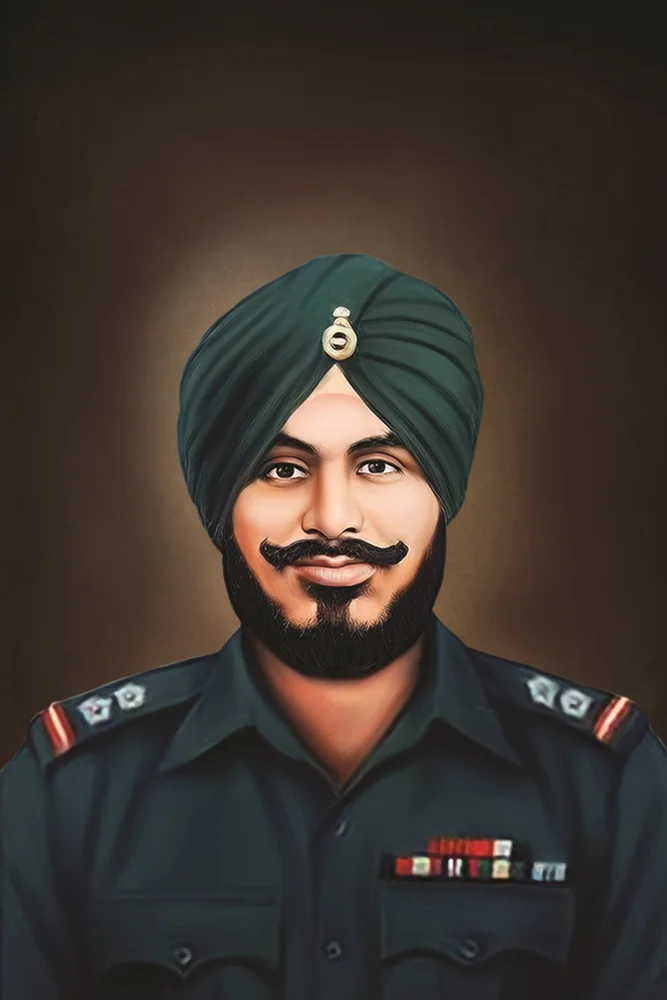
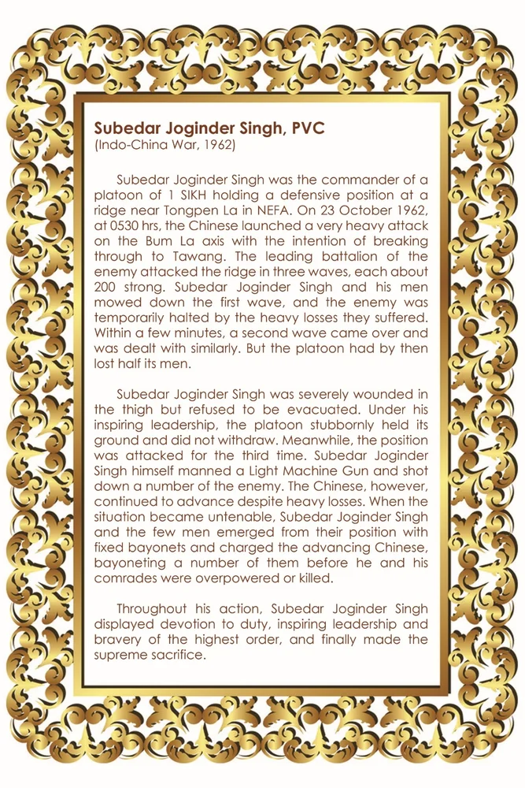

सुबेदार जोगिंदर सिंह, पीवीसी

शीर्षक: Subedar Joginder Singh, PVC
श्रेणी: हॉल ऑफ फेम
Award: Param Vir Chakra
Era / Action: Indo-China War, 1962
श्रेणी: हॉल ऑफ फेम
Award: Param Vir Chakra
Era / Action: Indo-China War, 1962
सुबेदार जोगिंदर सिंह, पीवीसी
उद्धरण (लिखित): (भारत-चीन युद्ध, 1962) सूबेदार जोगिंदर सिंह आई सिख की एक पलटन के कमांडर थे, जो नेफा में टोंगपेन ला के पास एक पहाड़ी पर रक्षात्मक स्थिति में थे। 23 अक्टूबर 1962 को प्रातः 0530 बजे। तवांग में घुसने के इरादे से चीनियों ने बुम ला अक्ष पर बहुत भारी हमला किया। दुश्मन की अग्रणी बटालियन ने रिज पर तीन लहरों में हमला किया, जिनमें से प्रत्येक में लगभग 200 की ताकत थी। सूबेदार जोगिंदर सिंह और उनके लोगों ने पहली लहर को कुचल दिया, और भारी नुकसान के कारण दुश्मन अस्थायी रूप से रुक गया। कुछ ही मिनटों में दूसरी लहर आई और उससे भी इसी तरह निपटा गया। लेकिन तब तक पलटन अपने आधे लोगों को खो चुकी थी। सूबेदार जोगिंदर सिंह जांघ में गंभीर रूप से घायल हो गए थे, लेकिन उन्होंने वहां से निकलने से इनकार कर दिया। उनके प्रेरक नेतृत्व में, पलटन हठपूर्वक अपनी जगह पर कायम रही और पीछे नहीं हटी। इस बीच, स्थिति पर तीसरी बार हमला किया गया। सूबेदार जोगिंदर सिंह ने खुद लाइट मशीन गन चलाई और कई दुश्मनों को मार गिराया। हालाँकि, चीनी भारी नुकसान के बावजूद आगे बढ़ते रहे। जब स्थिति अस्थिर हो गई, तो सूबेदार जोगिंदर सिंह और कुछ लोग निश्चित संगीनों के साथ अपनी स्थिति से उभरे और आगे बढ़ रहे चीनियों पर हमला किया, उनमें से कई पर संगीनों से वार किया, इससे पहले कि वह और उनके साथी परास्त हो गए या मारे गए। अपनी पूरी कार्रवाई के दौरान, सूबेदार जोगिंदर सिंह ने कर्तव्य के प्रति समर्पण, प्रेरक नेतृत्व और सर्वोच्च क्रम की बहादुरी का प्रदर्शन किया और अंततः सर्वोच्च बलिदान दिया।
उद्धरण (लिखित): (भारत-चीन युद्ध, 1962) सूबेदार जोगिंदर सिंह आई सिख की एक पलटन के कमांडर थे, जो नेफा में टोंगपेन ला के पास एक पहाड़ी पर रक्षात्मक स्थिति में थे। 23 अक्टूबर 1962 को प्रातः 0530 बजे। तवांग में घुसने के इरादे से चीनियों ने बुम ला अक्ष पर बहुत भारी हमला किया। दुश्मन की अग्रणी बटालियन ने रिज पर तीन लहरों में हमला किया, जिनमें से प्रत्येक में लगभग 200 की ताकत थी। सूबेदार जोगिंदर सिंह और उनके लोगों ने पहली लहर को कुचल दिया, और भारी नुकसान के कारण दुश्मन अस्थायी रूप से रुक गया। कुछ ही मिनटों में दूसरी लहर आई और उससे भी इसी तरह निपटा गया। लेकिन तब तक पलटन अपने आधे लोगों को खो चुकी थी। सूबेदार जोगिंदर सिंह जांघ में गंभीर रूप से घायल हो गए थे, लेकिन उन्होंने वहां से निकलने से इनकार कर दिया। उनके प्रेरक नेतृत्व में, पलटन हठपूर्वक अपनी जगह पर कायम रही और पीछे नहीं हटी। इस बीच, स्थिति पर तीसरी बार हमला किया गया। सूबेदार जोगिंदर सिंह ने खुद लाइट मशीन गन चलाई और कई दुश्मनों को मार गिराया। हालाँकि, चीनी भारी नुकसान के बावजूद आगे बढ़ते रहे। जब स्थिति अस्थिर हो गई, तो सूबेदार जोगिंदर सिंह और कुछ लोग निश्चित संगीनों के साथ अपनी स्थिति से उभरे और आगे बढ़ रहे चीनियों पर हमला किया, उनमें से कई पर संगीनों से वार किया, इससे पहले कि वह और उनके साथी परास्त हो गए या मारे गए। अपनी पूरी कार्रवाई के दौरान, सूबेदार जोगिंदर सिंह ने कर्तव्य के प्रति समर्पण, प्रेरक नेतृत्व और सर्वोच्च क्रम की बहादुरी का प्रदर्शन किया और अंततः सर्वोच्च बलिदान दिया।
ORIGINAL CITATION CARD

* Double-click either image above to view in fullscreen

मोबाइल पर खोलें
अपने फोन पर इस कलाकृति को देखने के लिए स्कैन करें।